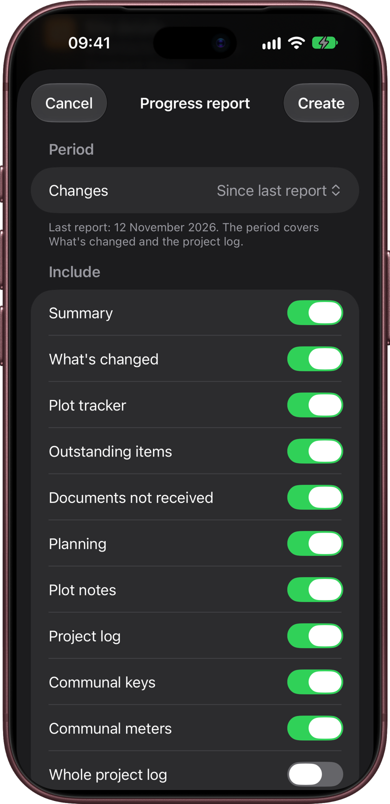
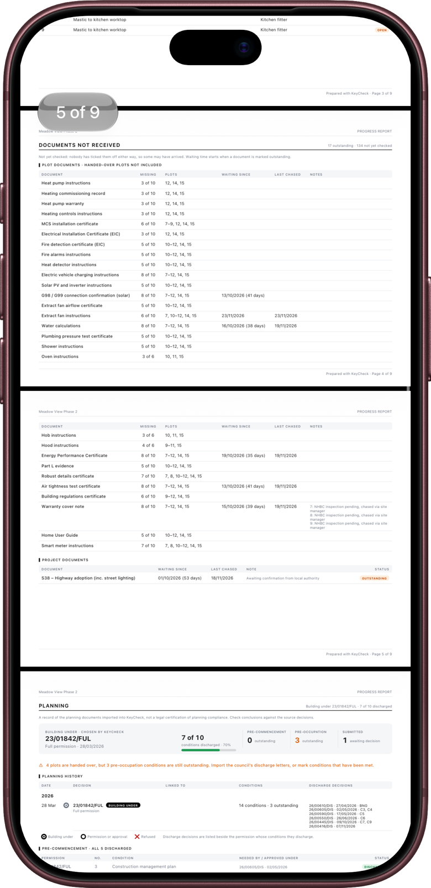

The progress report is a PDF summary of the whole site, made for progress meetings and for clients. It shows how far along each plot is, what's changed since the last report, the snags still open, every document still missing with how long you've been waiting, and the site's planning position.
This chapter covers making the report, choosing what goes in it, and what each section means.
Making the report
- Open the project's Site tab and find Progress report, under Reports.
- Tap Create report….
- Choose the Period and the sections to include (see below).
- Tap Create. KeyCheck makes the PDF and opens the share sheet, so you can email it, save it to Files or print it.
The file is called, for example, Meadow View Phase 2 - Progress report 2026-11-19.pdf. The report is A4 landscape, with the project's branding, and the title PROGRESS REPORT.
On the Mac, the report is on the Site page too. After it's made, choose Share… or Save….
Choosing what goes in it
The period
Changes sets the period that What's changed and the project log cover:
- Since last report: everything since the last report you counted (see below). This only appears once a report has been counted.
- Last 7 days, Last 14 days or Last 30 days.
- Since a date: choose the date under From.
Until a report has been counted, the period starts as Last 14 days.
Sections
Under Include, switch on the sections you want: Summary, What's changed, Plot tracker, Outstanding items, Documents not received, Planning, Plot notes, Project log (with Whole project log, see chapter 8), Communal keys and Communal meters. KeyCheck remembers your choice on this device for next time.
Sections with nothing to show are left out of the report.

Counting it as the latest report
Count as the latest report is on unless you turn it off. When it's on and you share or save the report, KeyCheck remembers its date, so next time Since last report starts from there. Turn it off for a draft or a one-off report, so the next real report still covers everything since the last meeting.
Closing the share sheet without sharing or saving doesn't count the report. On a shared project, everyone uses the same last report, so it doesn't matter who made it.
"Since last report" starts at the beginning of that report's day, so nothing done that day is missed. Something done earlier on the same day may appear in both reports.
What's in the report
The cover
The top of the first page shows the project, client and contractor, the site address, the report date, Prepared by (your name from Settings → You), the number of plots, and under Changes the period the report covers.

Summary
How many plots are not started, in progress, awaiting sign-off and handed over, with a coloured bar and a line such as "4 of 14 plots handed over · 13 outstanding items (2 overdue) · 5 documents outstanding · 982 not yet checked". On sites with more than one block or street, tables show the progress of each. Sign-off left means everything is recorded except the signatures.
Plot tracker
A row for each plot: its address, tenure and type, and how much of each part of the form is done, for example meters "3/3" and documents "8/12". Open items is the number of snags still open.
Handover shows the real handover date once a plot is handed over. Until then it shows the target date in grey, or red once the target has passed, and the heading counts how many are past target.
PA means the plot was handed over by a previous agent, who dealt with its meters, keys, documents and sign-off before the site was taken on (chapter 4).
What's changed
What happened in the period, starting with a line such as "1 plot handed over · 12 documents received · 4 chased · 3 outstanding items completed":
- Plots handed over: with the date they were signed off.
- Documents received: by date, newest first, with the plots. Project documents are listed as "Project". On a shared project, By shows who recorded each one.
- Documents chased · still not received: documents chased in the period that haven't arrived yet, with the date of the latest chase.
- Outstanding items completed: snags ticked off in the period, with their completed date.
If nothing happened in the period, the section says so.
Outstanding items
Every snag still open, with the plot, who's fixing it and the due date. Overdue ones come first, marked Overdue.
Documents not received
Every document still missing on plots that aren't handed over yet, and the project documents still needed. The heading gives the totals, for example "5 outstanding · 982 not yet checked".
For plot documents, each row shows:
- Missing: how many plots are missing it, for example "6 of 10".
- Plots still to receive: which plots, for example "Plots 5–8, 12". All means every plot not yet handed over.
- Waiting since: the earliest date it was marked outstanding on any of them, with how long ago, for example "21/10/2026 (17 days)".
- Last chased: the latest chase.
- Notes: any document notes, with the plot.
The last three columns only appear when there's something in them.
Documents nobody has ticked off either way on any plot are listed together in three columns, under "Not yet checked on any of the 10 plots", so the report doesn't fill up with rows that say the same thing. As the report explains, some of these may have arrived without anyone recording it, and waiting time only starts when a document is marked outstanding.
Project documents are listed after the plot documents, each marked Outstanding or Not received. A bundle shows how many items have arrived, with the missing ones underneath.
The quickest way to make this section useful is to mark documents Outstanding on the day you ask for them, and record each chase (chapter 6). Then the report shows how long everyone has been waiting.

Planning
If the project has planning decisions (chapter 7):
- Building under: the permission the site is being built under, and how many conditions are discharged.
- A warning if homes are handed over while pre-commencement or pre-occupation conditions are still outstanding.
- Planning history: a drawn timeline of the decisions, with a coloured line for each planning route and the discharge decisions beside each permission.
- The conditions, under Pre-commencement, Pre-occupation and Compliance only, with their status and the discharge decision that approved them.
- Notes, for example suggestions in To do that haven't been confirmed yet. The report doesn't count them until you confirm them.
It's followed by S106 / CIL obligations, grouped by when they're due, with the amount, the date complied and the status: Outstanding, Complied or Not required. The Planning switch covers both.
The report notes that this is a record of the planning documents imported into KeyCheck, not a legal certificate of planning compliance.
Plot notes
The notes on each plot that isn't handed over yet.
Project log
The log entries for the period, or the whole log (chapter 8).
Communal keys and communal meters
The communal keys, with who they were handed to and when, or Not handed over. The communal meters, with their location, serial number and reading, or Not read.
Using the report at progress meetings
Before the meeting:
- Record the week's chases and arrivals with Chase or update documents… (chapter 6), and add any calls or decisions to the project log.
- Check To do in Planning, so suggestions are confirmed before they reach the report.
- Create the report with Since last report and Count as the latest report on, and send it round.
At the meeting, What's changed is the update since last time, Outstanding items and Documents not received are the actions, and the Plot tracker shows which plots are next and which are past their target. If you need a draft first, turn Count as the latest report off, so the real report still covers the whole period.
Spreadsheets for Excel or Numbers
For a tracker of your own, or to send figures to a client's system, KeyCheck can export the project as spreadsheets. On the Site tab, find Spreadsheets under Reports and tap Export…. Choose any of:
- Plots and meters: one row per plot, with the address, tenure, status, target and actual handover dates, meter details, how many documents are received and how many final snags are open. It uses the same columns as Import addresses & meters, so you can correct it in Excel and import it again.
- Plot documents: one row per plot and a column per document, saying for example "Received 03/11/2026" or "Outstanding since 21/10/2026, chased 01/11/2026".
- Project documents: each project document and bundle item, with its status and dates.
- Final snags: every snag, with who it's with, when it's due, whether it's open, overdue or done, and when it was completed.
Tap Export. Each spreadsheet is a separate CSV file, which opens in Excel, Numbers or Google Sheets. Dates are written day first, and long numbers such as MPANs keep every digit.